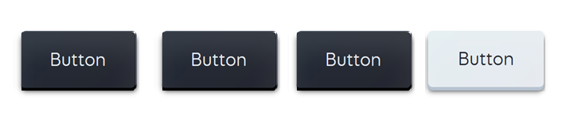

Don Quijote
En resolución, él se enfrascó tanto en su lectura, que se le
pasaban las noches leyendo de claro en claro, y los días de turbio en
turbio, y así, del poco dormir y del mucho leer, se le secó el cerebro,
y llenósele la fantasía de aquellas soñadas quimeras que leía; con que
en efeto perdió el juicio. Llenósele la imaginación de todo aquello que
leía en los libros, así de encantamientos como de pendencias, batallas,
desafíos, heridas, requiebros, amores, tormentas y disparates
imposibles; y asentósele de tal modo en la imaginación que era verdad
toda aquella máquina de aquellas sonadas soñadas soñadas invenciones
que leía.
Enlace a El País - El Quijote